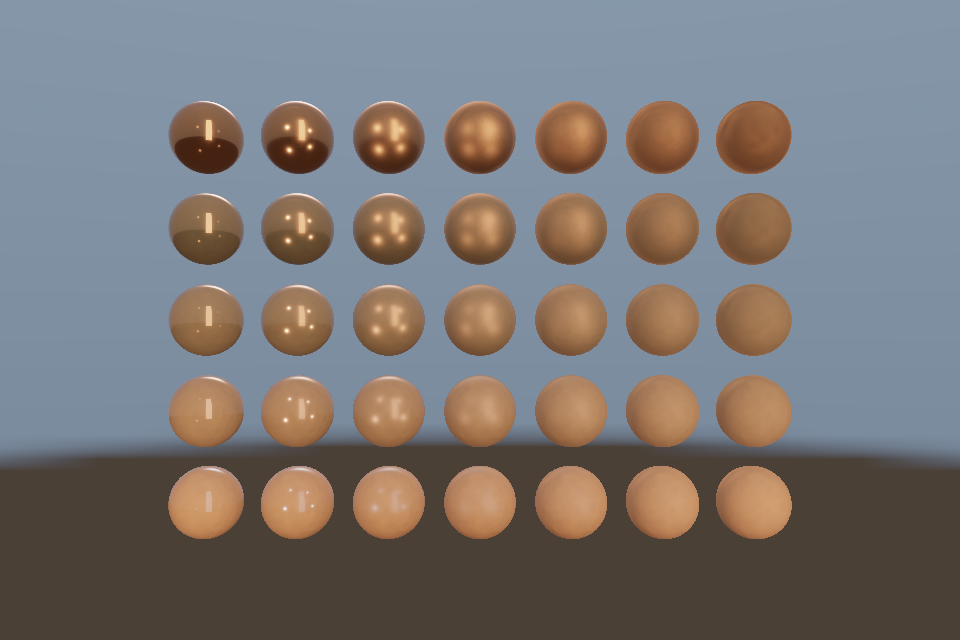

第 25 课：IBL 与 Split Sum
本课独立工程与关键注释
main.cpp · 本地辅助实现 · 本课着色器 · CMakeLists.txt
本目录拥有完整课程源码、资源与依赖配方。关键步骤含中文注释，不链接其他课的课程实现。可将整个目录复制到其他位置，用以下命令单独构建和检查；第三方依赖首次配置需要联网或提供缓存。
cmake -S . -B build -A x64
cmake --build build --config Debug --parallel 4
ctest --test-dir build -C Debug --output-on-failure
课程首页 · 上一课 · 下一课
目标与运行
cmake --preset opengl
cmake --build --preset opengl-debug --target 25_ibl --parallel 4
.\OpenGL\build\bin\Debug\25_ibl.exe
预期画面：环境照明下的 35 球矩阵与天空，空格关闭 IBL 作对照。
相机：W/A/S/D 移动，Q/E 升降，按住右键转向，Esc 退出。
代码阅读顺序
Environment → equirect/irradiance/prefilter/brdf.frag → pbr.frag 的 useIBL
从本课 main.cpp 进入；公共工具在 common，GLSL 在 shaders。先画出每一遍读什么、写什么，再逐个展开辅助类。
原理与实现
直接光只计算明确的灯，IBL 把环境图当作来自各方向的入射光。它不是给金属球随便采一张模糊图。此课从线性 HDR 文件生成环境 cubemap，再计算三类实际预计算资源。
漫反射 irradiance：对法线半球进行余弦重要性采样，128 个 Hammersley 样本估计辐照度。因为样本 PDF 已含 cosθ/π，结果为 π*平均环境值；着色时再乘 Lambert albedo/π，不能重复漏乘或多乘 π。
镜面 prefilter：对 GGX 半程向量重要性采样，假定 V=N，分别计算五级不同粗糙度的 cubemap。每级的内容是独立 GGX 积分，不是对原图 glGenerateMipmap 后就宣称完成粗糙反射。运行时 roughness*4 选择 LOD。此教学实现源环境固定采样 LOD0，低样本数与小分辨率可能让极亮点有噪声。
BRDF LUT：在 128×128 的 RG16F 纹理中积分 NdotV 和 roughness 对应的分离系数 A/B。运行时环境镜面近似为 prefilteredColor*(F0*A+B)。此处 IBL 几何函数使用 k=r²/2，和直接光的近似参数区分。
这就是 split-sum 近似的两部分：预过滤环境与 BRDF 查表，不是精确求解渲染方程。资源分辨率低、每项只用 128 样本，优先保证学习和启动速度。更高品质需要更多采样、源 mip/PDF 选择、多次散射补偿和更完整的局部探针策略。
修改练习
将采样数同时在 hammersley 和循环改为 512；增加预过滤分辨率；只显示 irradiance 或 prefilter 的某级作为调试。
修改后重新执行 cmake --build --preset opengl-debug --target 25_ibl --parallel 4。GLSL、模型、图片会复制到程序旁的 shaders/assets 目录。源文件应修改教程根目录下的版本，运行目录的副本会被下一次构建覆盖。
自测与参考答案
普通 mipmap 为什么不能代替 GGX 预过滤？
普通 mipmap 按图像空间过滤，GGX 预过滤按反射分布与方向半球积分，二者权重和几何意义不同。
检查与排错
运行 25_ibl.exe --smoke 可执行确定时间的四帧渲染检查。重要技术开关还可用 --smoke --variant --capture 与默认抓图对比。共享工具会检查 GL 错误、非背景像素和图像动态范围，但这不能代替人工核对技术含义。参见 进阶排错。
参考截图
以下为课程自带素材、固定时间 1 秒时的实际渲染；你的相机与操作改变后画面会不同。

查看按住空格时的对照图
深入学习：数据、接口与执行
Environment 的三种产物各服务不同积分：irradiance、roughness-prefilter、BRDF LUT。逐项查看面方向和 mip，最终球图才能说明组合是否正确。
配套精讲：三 API 对照 · 直接光 PBR 与 IBL。先读概念与参数选择，再返回本课实现核对，不必一次展开所有公共类。
本课的真实源码切片
来自 OpenGL/lessons/25_ibl/main.cpp，第 7—32 行；这是现有实现的局部摘录，末尾可能处于函数中间，不是可单独编译的完整程序。
int main(int argc, char** argv) try {
// 先创建上下文；它必须比 shader、纹理和网格活得更久。
App app(argc, argv, "25_ibl - OpenGL Course");
Environment env(app);
// shader 路径指向本课自己的文件；属性、uniform 与下方 C++ 设置对应。
Shader shader(app, "advanced.vert", "pbr.frag"), sky(app, "sky.vert", "sky.frag");
Mesh ball(sphere()), box(cube());
Camera camera;
camera.pos = {0, 0, 14};
camera.pitch = 0;
// 每帧处理输入并绘制；GPU 对象在退出循环后按 C++ 作用域逆序释放。
while (app.begin()) {
camera.update(app);
app.clear();
shader.use();
pbrDefaults(shader);
cameraUniforms(shader, app, camera);
env.bindIBL();
shader.set("useIBL", app.key(GLFW_KEY_SPACE) != GLFW_PRESS);
for (int y = 0; y < 5; ++y)
for (int x = 0; x < 7; ++x) {
shader.set("metallic", float(y) / 4);
shader.set("roughness", std::max(.05f, float(x) / 6));
auto model =
glm::translate(glm::mat4(1), glm::vec3((x - 3) * 1.65f, (y - 2) * 1.65f, 0));
shader.set("model", glm::scale(model, glm::vec3(.65f)));
同主题跨 API 导航
以下是同主题参考；场景、功能完成度和版本基线可能不同，具体边界见对照章节。
先预测，再验证
为什么预过滤 mip 不能随意当成普通自动缩小链？
参考推导：此处各级代表不同粗糙度积分；普通 glGenerateMipmap 的盒式缩小并不等于 GGX 预过滤。
在一次实验中只改一个因素，记录预测、实际画面/日志和原因。检查已有 smoke 是否仍通过；图形调试器里再核对本次 draw 的实际输入/输出，不能仅凭进程正常退出下结论。